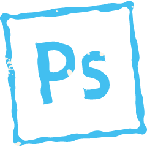
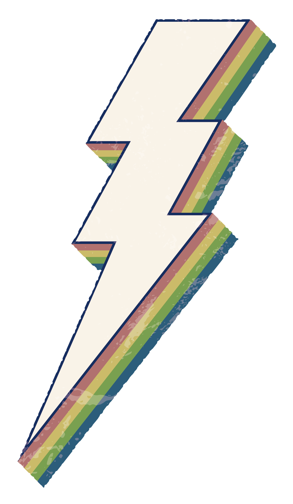
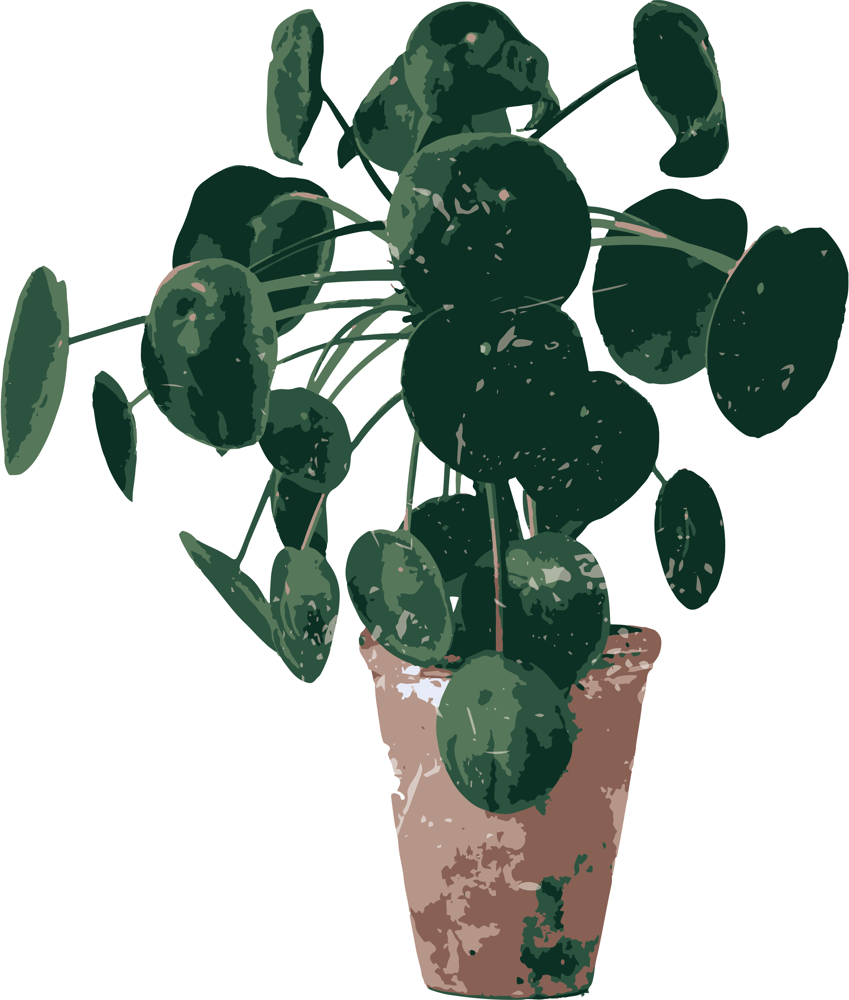

Matthias Laurence A. Villarino
UAHAFHH USCUSCUSC
子供の頃、絵を描くことやピクセルアート、ゲーム開発を趣味で制作していました。そのうち、デザインする事と コンセプトワークを考える事が楽しいと思う事ができました。学問を志すことで、タイポグラフィーやロゴマークなどの 日本のグラフィックデザインの複雑さと考え方を理解したいと言う思いから、あらゆる考え方デザインを研究することで、 少しずつ経験を積んでいき、このポートフォリオを作成しました。これからも日々向上していきたいと思います。

動画編集ソフト、写真編集ソフト、文章を書くこと、デッサン、スケッチ、絵を描くこと、クリティカルシンキング
英語、日本語 N2、タガログ語、セブアノ語
創作活動、動画制作、音楽を聴くこと、絵を描くこと、キャラクターデザイン

